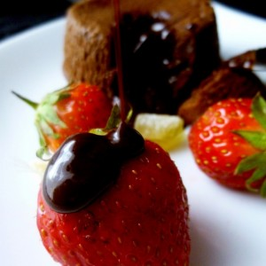
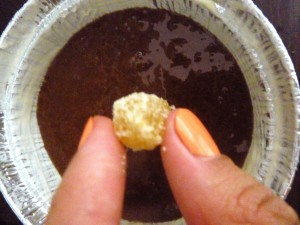
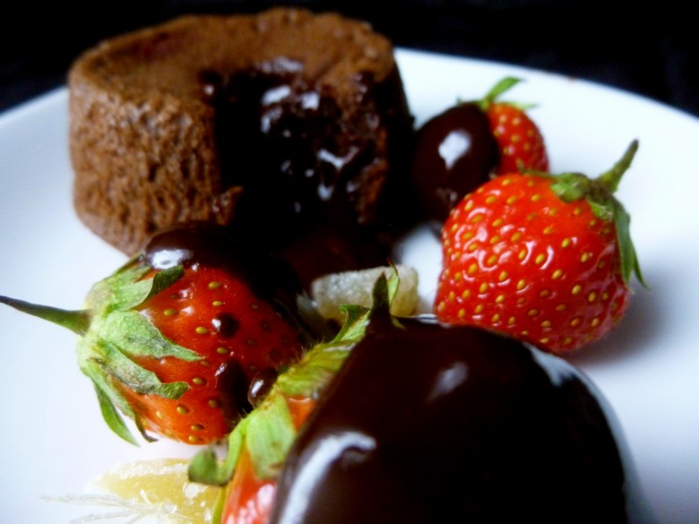

Fondant chocolat gingembre #SexyFood

Première participation à la Bataille food pour sa quatorzième édition.
La bataille Food est un défi culinaire lancé par Jenna du Bistro de Jenna qui réunit blogueurs & non blogueurs autour d’un thème commun très gourmand!
Ma première participation c’est aujourd’hui : la bataille food#14 sur le thème « Sexy food Aphrodite épice ma cuisine » organisée par chut je pâtisse
Hum Hum Hum pas facile hein? J’avoue qu’on a bien rigolé en réfléchissant sur ce thème (surtout que quand on demande de l’aide à un homme pour un thème comme celui ci son imagination est décuplée^^) Finalement plutôt que de faire quelque chose de trop farfelue j’ai préféré faire quelque chose de beau, de bon et soooo sexy 😉
J’ai opté pour un fondant au chocolat parfumé au gingembre servi avec de délicieuses fraises et un coulis au chocolat.
Je laisse s’émoustiller vos pupilles et vos papilles car maintenant place à la recette!
Ingrédients
- chocolat noir à 60-70% - 100g
- beurre - 90g
- farine - 40g
- sucre - 80g
- oeufs - 3
- gingembre en poudre - 3 càs
- gingembre confit - 5 morceaux
- beurre - quelques morceaux pour beurrer les ramequins
Instructions
- Faire fondre le beurre et le chocolat au bain marie
- Dans un saladier verser les œufs puis le sucre. Fouetter (environ 5min) le tout jusqu'à obtenir une sorte de mousse avec une texture légère
- Incorporer le chocolat fondu puis la farine tamisée et le gingembre en poudre
- Bien mélanger jusqu'à obtenir une pâte homogène La pâte à gâteau obtenue est assez liquide mais c'est normal
- Beurrer les ramequins
- Remplissez les à moitié
- Placer un morceau de gingembre au centre de chaque ramequin
- Finir de remplir les moules jusqu'à 2cm du bord
- Mettre les fondants pendant 1 heure au réfrigérateur
- Préchauffer le four à 200°
- Une fois sortie du frigo enfourner les fondants pendant 8min ou 10 min si vous ne les voulez pas trop coulants
- Servez immédiatement !!


Les tips de la communauté
Les commentaires ne contiennent pas d'informations exploitables supplémentaires.